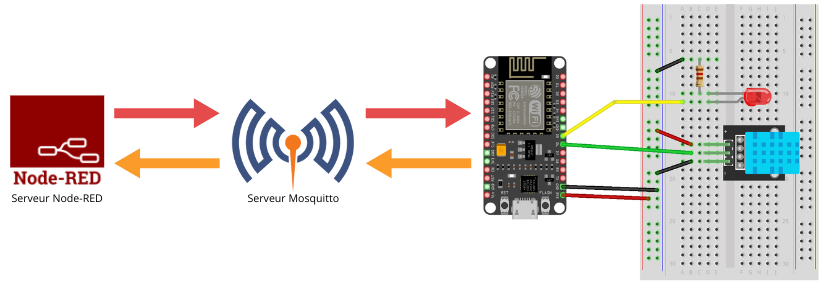
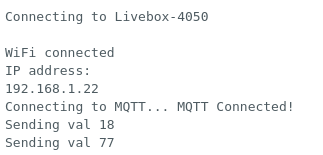
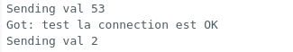

Chaîne IOT : ESP, MQTT et Node-Red

Présentation du système
Les modules terminaux de l'internet des objets sont généralement alimentés par batterie. Dans ce cas l'utilisation d'un nano-ordinateur est impossible, l'autonomie serait trop faible. (Un nano-ordinateur Raspberry Pi alimenté par 3 piles de 1,5v a une autonomie de 3h à 6h).
L'utilisation d'un microcontrôleur à faible consommation est généralement la solution utilisée dans l'IOT embarqué.
Nos serveurs seront installées dans un des serveurs Proxmox.
Nous allons avoir besoin :
- 1 serveur Node-RED dans un LXC (LXC c'est une VM un peu spécial)
- 1 serveur MQTT dans un LXC
- 1 client MQTT une ESP32
Etape 1 : Installation du serveur MQTT (Mosquitto)
Se connecter à un serveur/noeud en SSH.
Installer MQTT en lançant se script :
bash -c "$(wget -qLO - https://github.com/tteck/Proxmox/raw/main/ct/mqtt.sh)"
En mode Advanced :
- Distribution : Debian
- Version : 12
- Type : Unprivileged
- Root Password : edison
- Container ID : 900x
- Static IPv4 : 10.0.6.9x/8
- Disable IPv6
- DNS Server IP : 1.1.1.1
Une fois l'installation terminé :
- Se connecter en SSH au serveur MQTT
- Exécuter la commande suivante pour créer un utilisateur "edison" avec un mot de passe "edison" :
mosquitto_passwd -c /etc/mosquitto/passwd edison
Etape 2 : Préparer le client (ESP32)
Réaliser le câblage suivant :
- une LED sortie la broche 5
- le capteur de tempéraure sur la broche 17
Dans l'IDE Arduino installer la library (blibliothèque) :
- Adafruit_MQTT de Adafruit
- DHT sensor library de Adafruit
#include <WiFi.h>
#include "Adafruit_MQTT.h"
#include "Adafruit_MQTT_Client.h"
#include "DHT.h"
/************************* WiFi Access Point *********************************/
#define WLAN_SSID "xxxxxxx" //SSID Wifi
#define WLAN_PASS "xxxxxx //key Wifi
/************************* Adafruit.io Setup *********************************/
#define SERVER "xxx.xxx.xxx.xxx" //Addresse IP server MQTT
// Using port 1883 for MQTT
#define SERVERPORT 1883 //en local 1883
// Account Configuration
#define USERNAME "edison"
#define KEY "edison"
/************ Global State (you don't need to change this!) ******************/
// WiFiFlCient
WiFiClient client;
// Setup the MQTT client class by passing in the WiFi client and MQTT server and login details.
Adafruit_MQTT_Client mqtt(&client, SERVER, SERVERPORT, USERNAME, KEY);
/****************************** Feeds ***************************************/
// Setup a feed called 'temp' for publishing.
Adafruit_MQTT_Publish temp = Adafruit_MQTT_Publish(&mqtt, "esp/temp");
// Setup a feed called 'onoffbutton' for subscribing to changes.
Adafruit_MQTT_Subscribe onoffbutton = Adafruit_MQTT_Subscribe(&mqtt, "esp/onoffbutton");
/****************************** Feeds ***************************************/
#define LED 5 //LED PIN
#define DHTPIN 17
#define DHTTYPE DHT11
DHT dht(DHTPIN, DHTTYPE); // constructeur pour déclarer notre capteur
/*************************** Sketch Code ************************************/
void setup() {
Serial.begin(115200);
delay(10);
pinMode(LED, OUTPUT);
dht.begin();
Serial.println("Client MQTT Example");
// Connect to WiFi access point.
Serial.println(); Serial.println();
Serial.print("Connecting to ");
Serial.println(WLAN_SSID);
WiFi.begin(WLAN_SSID, WLAN_PASS);
delay(500);
while (WiFi.status() != WL_CONNECTED) {
delay(500); Serial.print(".");
}
Serial.println(); Serial.println("WiFi connected");
Serial.println("IP address: "); Serial.println(WiFi.localIP());
// Setup MQTT subscription for onoff feed.
mqtt.subscribe(&onoffbutton);
}
uint32_t x=0;
void loop() {
MQTT_connect();
////// Subscribe part ///////
Adafruit_MQTT_Subscribe *subscription;
while ((subscription = mqtt.readSubscription(5000))) {
if (subscription == &onoffbutton) {
Serial.print("Got: ");
String mes = (char *)onoffbutton.lastread;
Serial.println(mes);
if(mes == "on") digitalWrite(LED,HIGH);
else digitalWrite(LED,LOW);
}
}
// if()
////// Publish part ///////
//x = random(0, 100); //valeur à envoyer
x = dht.readTemperature();
// Now we can publish stuff!
Serial.print("Sending val ");
Serial.println(x);
temp.publish(x);
delay(2000); // wait a couple seconds to avoid rate limit
}
// Function to connect and reconnect as necessary to the MQTT server.
void MQTT_connect() {
int8_t ret;
// Stop if already connected.
if (mqtt.connected()) {
return;
}
Serial.print("Connecting to MQTT... ");
uint8_t retries = 3;
while ((ret = mqtt.connect()) != 0) { // connect will return 0 for connected
Serial.println(mqtt.connectErrorString(ret));
Serial.println("Retrying MQTT connection in 5 seconds...");
mqtt.disconnect();
delay(5000); // wait 5 seconds
retries--;
if (retries == 0) {
// basically die and wait for WDT to reset me
while (1);
}
}
Serial.println("MQTT Connected!");
}
Copier le code
Modifier :
- le SSID wifi
- le mot de passe wifi
- l'adresse du serveur MQTT
Compiler le code si aucune erreur uploader le code dans la carte.
Dans le serial monitor, vous devez voir la connexion réussie au wifi puis les températures envoyées au serveur MQTT.

Depuis le serveur Mosquitto (MQTT) entrer la commande suivante pour observer les données arrivant sur le serveur :
mosquitto_sub -h localhost -t "esp/temp" -u edison -P edison
ctrl + c pour quitter ce mode d'écoute
Depuis le serveur Mosquitto (MQTT) entrer la commande suivante pour publier une donnée que le client viendra lire :
mosquitto_pub -h localhost -t "esp/onoffbutton" -u edison -P edison -m "test la connection est OK"
Dans le serial monitor, vous devez voir la reception du message récupérer sur le serveur MQTT.

Etape 3 : Installation du serveur MQTT (Mosquitto)
Se connecter à un serveur/noeud en SSH.
Installer RED-Node en lançant se script :
bash -c "$(wget -qLO - https://github.com/tteck/Proxmox/raw/main/ct/node-red.sh)"
En mode Advanced :
- Distribution : Debian
- Version : 12
- Type : Unprivileged
- Root Password : edison
- Container ID : 800x
- Static IPv4 : 10.0.6.8x/8
- Disable IPv6
- DNS Server IP : 1.1.1.1
Une fois l'installation terminée :
- Se connecter en SSH au serveur Node-RED
- Exécuter la commande suivante pour installer la bibliothèque dashboard :
cd ~/.node-red
npm i node-red-dashboard
- Se connecter sur l'interface web du serveur Node-RED (port 1880)
Ouvrir le dashboard
Ajouter les élèments suivant :
- mqtt in
- mqtt out
- switch
- gauge
Relier mqtt out à gauge et switch à mqtt in.
Double-cliquer sur les élèments pour les configurer :
-
mqtt in
- Serveur : adresse du serveur mqtt
- Protocole : MQTT V3.1 (hérité)
- Sécurité : user et password créés à la configuration du serveur MQTT (edison // edison)
- Sujet (Topic) : esp/temp
-
mqtt out
- Serveur : adresse du serveur mqtt
- Protocole : MQTT V3.1 (hérité)
- Sécurité : user et password créés à la configuration du serveur MQTT (edison // edison)
- Sujet (Topic) : esp/onoffbutton
-
gauge
- Range : 0 - 50 (paramétrages esthétiques)
-
switch
- On Payload : on
- Off Payload : off
Une fois configurer, cliquer sur Déployer, puis ouvrir UI :
- la gauge doit afficher la température
- le switch doit allumer/eteindre la LED
Sources :
https://randomnerdtutorials.com/esp8266-and-node-red-with-mqtt/
https://eduscol.education.fr/sti/ressources_pedagogiques/le-protocole-mqqt-et-linternet-des-objet-iot
https://eduscol.education.fr/sti/sites/eduscol.education.fr.sti/files/ressources/pedagogiques/12119/12119-3-mise-oeuvre-du-mqtt-avec-esp8266.docx